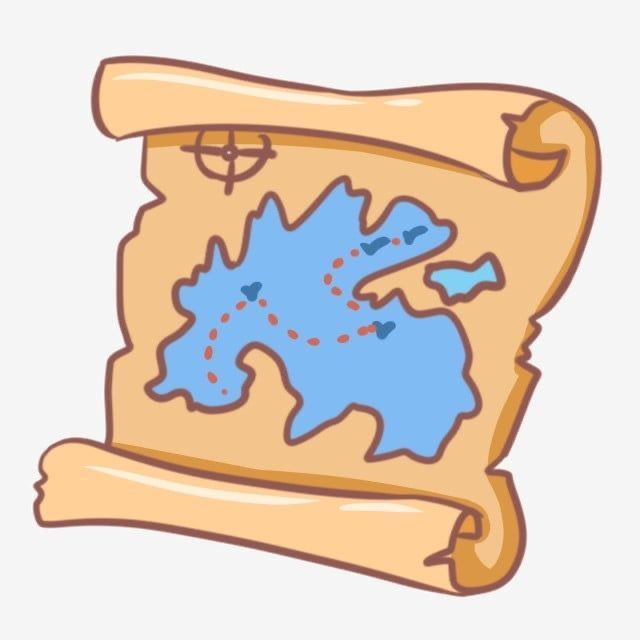

Inicio
Multimedia 1
Multimedia 2
Multimedia 3
Menu 1
Menu 2
Menu 3
Mapas Interactivos

Explorá diferentes ubicaciones del mundo mediante estos mapas.
Asunción - Paraguay
Buenos Aires - Argentina
Madrid - España
Volver al Inicio